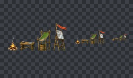
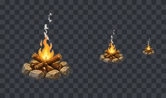
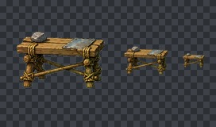
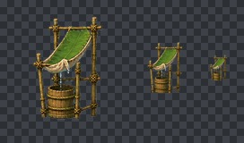
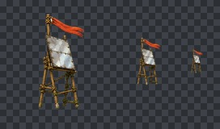

FORGE QUALITY GATE · job_20260822130400_6d786a69
통과
100/100
파일 7개 · 오류 0개 · 주의 0개

camp_structures_atlas_alpha.png
1672 × 941
자동 검사 항목 통과

campfire.png
340 × 427
자동 검사 항목 통과

workbench.png
468 × 325
자동 검사 항목 통과

rain_collector.png
447 × 626
자동 검사 항목 통과

rescue_signal.png
424 × 798
자동 검사 항목 통과
camp-structures-metadata.json
3 KB
자동 검사 항목 통과
structure-cleanup-verification.json
1 KB
자동 검사 항목 통과